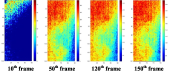
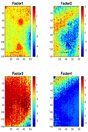
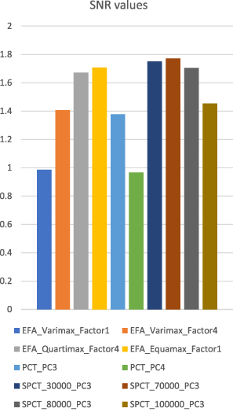

Can Math See Through Walls? Exploratory Factor Analysis for Defect Identification with Active Thermography
Imagine you're building an airplane wing out of carbon fiber. It looks perfect on the outside — smooth, strong, flawless. But somewhere inside, hidden between layers thinner than a fingernail, there's a tiny void. A bubble. A crack waiting to happen at 35,000 feet.
You can't cut it open to check. So how do you find it?
The hidden targets — artificial subsurface defects (round + triangular) buried inside a carbon fiber plate. This is what we're trying to find without cutting anything open.
You flash it with heat and watch how the surface cools. Defects cool differently than solid material. An infrared camera captures the temperature change across hundreds of frames. The problem? The signal is buried in noise and uneven heating gradients — like trying to hear a whisper in a stadium.

Raw thermal images at different time points. The defects are in there — but you'd never know it from looking. This is the mess we start with.
Existing methods like Sparse PCT can clean up the signal — but require manually tuning a parameter. Get it wrong and you miss the defect or hallucinate one. This paper proposes Exploratory Factor Analysis (EFA) with orthogonal rotation: no tuning knobs, no guesswork. EFA rotates its own axes to find the most interpretable view of the data and automatically isolates defect signals from background noise.

EFA with equamax rotation — the defects emerge clearly from the noise. Both shapes (round + triangular) are visible with sharp edges. No parameters were tuned to get this.

Signal-to-noise ratio across all methods. EFA (equamax) matches the best hand-tuned SPCT result — fully automatically. Higher = cleaner defect detection.
Tested on two real CFRP specimens, EFA matched the best-case SPCT without anyone guessing a single parameter. One less thing to get wrong. One step closer to machines that can inspect themselves.